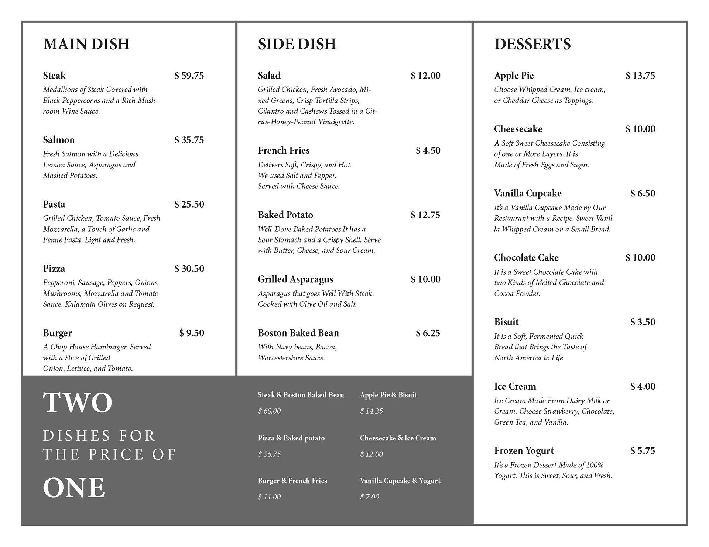
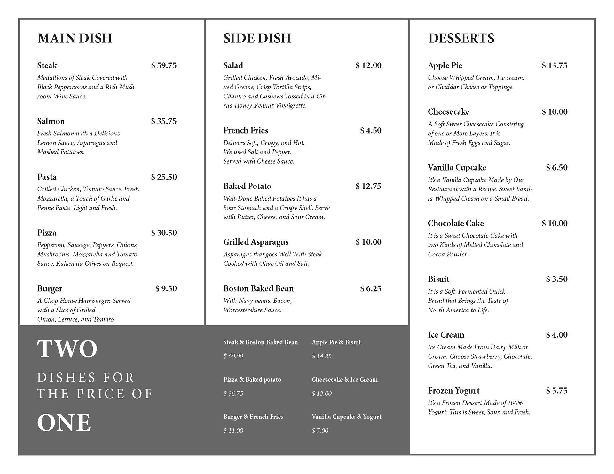

Project 1
 

Description
a restaurant menu designed with simplicity and clarity in mind. This menu is designed to make it easy for diners to quickly find their favorite drinks and dishes without feeling overwhelmed by too many choices. The YUM FOOD MENU is divided into 3 columns with headings for hot drinks, cold drinks, beer, cocktails, wine, main dishes, side dishes, and desserts. The inclusion of a "two dishes for the price of one" section adds value to the menu while keeping things simple for diners. The color palette of the menu is kept simple with the use of gray, giving it a modern and clean look. The slab-serif font adds a touch of sophistication and elegance to the design. On the front cover of the menu, you will find the name "YUM FOOD MENU" along with a spoon illustration, setting the tone for the delicious food to come.